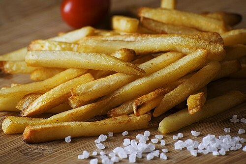

Tasty food
Food is any substance consumed by an organism for nutritional support. Food usually consists of plant, animal, or fungal origin and contains essential nutrients such as carbohydrates, fats, proteins, vitamins, or minerals. The substance is ingested by an organism and assimilated by the organism's cells to provide energy, maintain life, or support growth. Different species of animals have different feeding behaviours that satisfy the needs of their metabolisms and have evolved to fill specific ecological niches within specific geographical contexts.

Burger

A burger is a popular, versatile sandwich consisting of a cooked, savory patty (often beef, chicken, or veggie) placed inside a sliced bun, typically garnished with lettuce, tomato, cheese, onion, and condiments like ketchup or mayonnaise. It can be customized with various toppings and sauces for different flavors.
french fries (fries)

French fries,[a] or simply fries, also known as chips,[b] and finger chips (Indian English),[2] are batonnet or julienne-cut[3] deep-fried potatoes of disputed origin. They are prepared by cutting potatoes into even strips, drying them, and frying them, usually in a deep fryer. Pre-cut, blanched, and frozen russet potatoes are widely used, and sometimes baked in a regular or convection oven, such as an air fryer. French fries are served hot, either soft or crispy, and are generally eaten as part of lunch or dinner or by themselves as a snack, and they commonly appear on the menus of diners, fast food restaurants, pubs, and bars. They are typically salted and may be served with ketchup, vinegar, mayonnaise, tomato sauce, or other sauces. Fries can be topped more heavily, as in the dishes of poutine, loaded fries or chili cheese fries, and are occasionally made from sweet potatoes instead of potatoes.